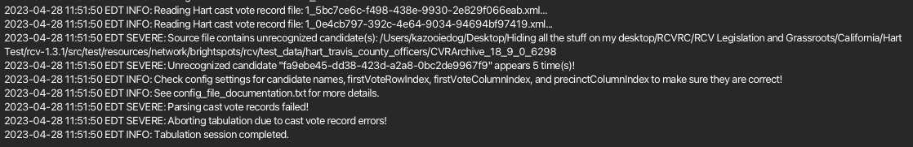

Section 29 - RCTab Operator Log Messages¶
RCTab generates messages and displays them in the Operator Log at the bottom of the user interface window. The log will list "SEVERE" messages, "WARNING" messages, and "INFO" messages for the operator to review and take appropriate action.

On the following pages are all the "SEVERE", "WARNING", and "INFO" messages that RCTab may log during the setup and tabulation of an RCV election. Each "SEVERE" error includes a suggested resolution step or steps directly below the relevant error. Some "SEVERE" errors can all be resolved with the same resolution step and are grouped together before the suggested resolution.
Errors in the operator log will include detailed information about errors encountered. Users should rely on that information, as well as information provided in this guide, to resolve errors encountered in tabulation. If following those steps still does not resolve your problem, contact the manufacturer for support. "WARNING" and "INFO" messages do not interrupt the ability of RCTab to complete tabulation and so do not have resolution steps suggested.
SEVERE MESSAGES¶
Configuration File Errors¶
Errors on this tab are correctable through the Tabulation drop-down menu on RCTab, by creating a new configuration file from scratch, or may require reference to other sections of this document.
SEVERE, "No contest config path specified!"
SEVERE, "Failed to load contest config: %s"
Suggested resolution: Load a configuration file using the "File" menu or create a new configuration file using the user interface and following Section 18 - User Guide document.
SEVERE, "Failed to load config."
Suggested resolution: Create new configuration using the user interface.
SEVERE, "Error logging config file: %s\n"
Suggested resolution: Create new configuration using the user interface.
SEVERE, "Invalid winnerElectionMode!"
SEVERE, "maxRankingsAllowed must either be \"%s\" or an integer from %d to %d!"
SEVERE, "maxSkippedRanksAllowed must either be \"%s\" or an integer from %d to %d!"
SEVERE, "tabulatorVersion %s not supported"
SEVERE, "tabulatorVersion must be set to %s"
SEVERE, "tabulatorVersion is required"
SEVERE, "Invalid tiebreakMode!"
SEVERE, "Invalid overvoteRule!"
SEVERE, "Invalid contestDate: %s!"
SEVERE, "Error parsing JSON file: %s\n%s\n" + "Check file formatting and values and make sure they are correct!\n"
+ "It might help to try surrounding values causing problems with quotes (e.g. \"value\").\n"
+ "See config_file_documentation.txt for more details."
SEVERE: "continueUntilTwoCandidatesRemain can't be true in a multi-seat contest unless the winner election mode is multi-pass IRV!"
SEVERE: "batchElimination can't be true in a multi-seat contest unless the winner election mode is multi-pass IRV!"
SEVERE, "winnerElectionMode can't be multiSeatSequentialWinnerTakesAll in a single-seat " + "contest!"
SEVERE, "winnerElectionMode can't be multiSeatBottomsUp in a single-seat contest!"
SEVERE, "winnerElectionMode can't be multiSeatAllowOnlyOneWinnerPerRound in a single-seat " + "contest!"
SEVERE, "batchElimination can't be true when winnerElectionMode is multiSeatBottomsUp!"
SEVERE, "%s should not be defined for CVR source with provider \"%s\" for file source %s", fieldName, provider, inputLocation
SEVERE, "treatBlankAsUndeclaredWriteIn should not be true for CVR source with provider \"%s\"for file source %s", fieldName, provider, inputLocation
SEVERE, "hareQuota can't be true when winnerElectionMode is \"%s\"!", winnerMode
SEVERE, "nonIntegerWinningThreshold and hareQuota can't both be true at the same time!"
SEVERE, "Failed to get tiebreaker!\n%s"
Suggested resolution: Create a configuration file using RCTab user interface. It should not be possible to select inconsistent sets of rules (which these errors are responding to) if a configuration is created using the UI. Confirm that the configuration file follows requirements set out in Section 18 - User Guide document.
SEVERE, "\"%s\" can't be used as %s if it's also being used as %s!" (%s = string, field, otherField)
Suggested resolution: Change one of these values so that different values are used for different options.
SEVERE, "%s must be an integer equal to %d for file source %s", fieldName, lowerBoundary, inputLocation
SEVERE, "%s must be an integer from %d to %d for file source %s", fieldName, lowerBoundary, upperBoundary, inputLocation
SEVERE, "%s must be an integer equal to %d if supplied for file source %s", fieldName, lowerBoundary, inputLocation
SEVERE, "%s must be an integer from %d to %d if supplied for file source %s", fieldName, lowerBoundary, upperBoundary, inputLocation
Suggested resolution: These errors appear when a number the user input into a number-based field (such as random seed or allowable number of consecutive skipped rankings) is outside the bounds usable by RCTab. Refer to the specific error message in the tabulator log, which will provide a range of numbers RCTab is compatible with for that specific field.
SEVERE, "Contest config validation failed! Please modify the contest config file and try again.\nSee config_file_documentation.txt for more details."
Suggested resolution: This error message will be preceded by specific error messages about information that RCTab finds missing in the configuration file.
SEVERE, "\"%s\" is a reserved term and can't be used for %s!"
Suggested resolution: Change the term used in the option setting identified in the error code. Re-save configuration file.
SEVERE, "Error during validation:\n%s\nValidation failed!"
Suggested resolution: Check operator error log for other error messages. Other error messages will appear explaining why validation could not be completed.
SEVERE, "Unable to process a config file with version %s using older version %s of the app!"
Suggested resolution: Create new configuration file using the user interface.
Contest Info Error¶
The error in this section is correctable on the Contest Info tab.
SEVERE, "contestName is required!"
Suggested resolution: Enter the contest name in the "Contest Info/Contest Name" field.
CVR Errors¶
Errors in this section are correctable on the CVR Files tab. They may also require detailed examination of CVR Files themselves and consultation with voting system vendor documentation to identify the source of any issues with CVR Files.
SEVERE, "filePath is required for each cast vote record file!"
Suggested resolution: Verify that a valid file location is entered in the "CVR Files/Path" field for each CVR included in the tabulation.
SEVERE, "No cast vote records found!"
Suggested resolution: Check that the folder or file RCTab is directed to has CVR files compatible with the RCTab software.
SEVERE, "Contest config must contain at least 1 cast vote record file!"
Suggested resolution: Select, in the "CVR Files" tab, at least one cast vote record file to tabulate.
SEVERE, "Cast vote record file not found: %s"
Suggested resolution: Confirm that the file path supplied for the CVR file listed in the error goes to a file accessible by RCTab.
SEVERE, "Duplicate cast vote record filePaths are not allowed: %s"
Suggested resolution: Delete all but one listing of each CVR File in the CVR list. CVR files should only be listed once in the CVR list.
SEVERE, "Error opening cast vote record file: %s"
Suggested resolution: Ensure that you have added a cast vote record file in a format recognized by RCTab.
SEVERE, "Aborting tabulation due to cast vote record errors!"
Suggested resolution: Review the log for other errors that will alert you to specific errors with your CVR files. Review your cast vote record files. Ensure that all candidate codes and other vote data are properly represented in configuration files.
SEVERE, "Parsing cast vote records failed!"
SEVERE, "Error parsing source file %s"
Suggested resolution: Check for other error messages in the operator log box. Parsing files fails when data appears in those files that the configuration file does not include. If information appears in the CVR files that is not in a configuration file, RCTab will abort tabulation. Ensure that CVR files are in a format RCTab can read.
SEVERE, "Data format error while parsing source file: %s"
Suggested resolution: Check that your CVR file is in the correct format. User may need to retrieve new CVR files.
SEVERE, "undeclaredWriteInLabel must be supplied if treatBlankAsUndeclaredWriteIn is true!"
Suggested resolution: Confirm that Undeclared Write-In Label is supplied on CVR tab.
SEVERE, "Invalid cell address: %s"
Suggested resolution: Check CVR files tab. Confirm that correct information explaining where information is included in CVRs is included for each CVR file.
SEVERE, "precinctColumnIndex is required when tabulateByPrecinct is enabled: %s"
Suggested resolution: Update configuration to include Precinct Column Index information for the CVR being processed. Or uncheck Tabulate by Precinct in the configuration.
SEVERE, "Error reading file!\n%s"
Suggested resolution: This error only applies to Clear Ballot files. Ensure that all CVR Files in CVR Files tab are labeled as the correct vendor.
SEVERE, "If a cell contains multiple candidates split by the overvote delimiter, it's not valid for any of them to be blank or an explicit undervote."
Suggested resolution: Check your CVR file against the data in your election management system and ensure that CVR files are exporting with accurate information.
SEVERE, "Error parsing cast vote record:\n%s"
Suggested resolution: Confirm that all CVR Files are set to the correct vendor. Check for other error messages in the operator log to see more detailed information about errors. Compare CVR file to expected CVR files available from your vendor to confirm that files are in the correct format.
SEVERE, "overvoteDelimiter and overvoteLabel can't both be supplied."
Suggested resolution: Review configuration file settings. Ensure that only one of these two fields is filled out on the CVR Files tab.
SEVERE, "overvoteDelimiter is required for an ES&S CVR source when overvoteRule is set to "Exhaust if Multiple Continuing"
Suggested resolution: Review configuration file settings. Ensure that the overvote delimiter field on the CVR files tab is filled in with the character used in your CVR File to differentiate between candidates ranked at an overvote.
SEVERE, "If a cell contains multiple candidates split by the overvote delimiter, it's not valid for any of them to be blank or an explicit undervote."
Suggested resolution: Review your CVR. Make sure that it correctly includes data for any overvoted ranking. Check with the CVR vendor to make sure the CVR is exporting correctly from their system.
SEVERE, "overvoteDelimiter is invalid."
Suggested resolution: Check the information input into the overvote delimiter setting on the CVR Files tab. That setting can't contain any backslashes (
\) and it must contain at least one character that's not a letter, number, dot, apostrophe, comma, hyphen, quotation mark, or space. For example, an overvote delimiter could be the character|. It could never be the character\.
SEVERE, "Cast vote record identifier missing on row %d in file %s. This may be due to an incorrectly formatted xlsx file. Try copying your cvr data into a new xlsx file to fix this.",cvrIndex + firstVoteRowIndex, excelFileName
Suggested resolution: In addition to the resolution suggested in the message, check your cast vote record and compare it to any expected CVR data from your voting system vendor. Check with the CVR vendor to make sure the CVR is exporting correctly from their system. Users can also remove any CVR ID labels on the CVR Files tab, which should resolve this issue.
SEVERE, "No header row found in cast vote record file: %s", this.cvrPath
SEVERE, "No choice columns found in cast vote record file: %s", this.cvrPath
SEVERE: "Wrong number of choice header fields in cast vote record file: %s", this.cvrPath
SEVERE: "Current snapshot has no CVRContests."
SEVERE, "Error parsing contest manifest:\n%s", exception
SEVERE, "Error parsing precinct manifest:\n%s", exception
SEVERE, "Error parsing candidate manifest:\n%s", exception
SEVERE, "No precinct data found!"
SEVERE, "No precinct portion data found!"
SEVERE, "No contest data found!"
SEVERE, "No candidate data found!"
SEVERE, "Precinct ID \"%d\" from CVR not found in manifest data!",precinctId
SEVERE, "Precinct portion ID \"%d\" from CVR not found in manifest data!",precinctPortionId
SEVERE: "GpUnit \"%s\" for CVR \"%s\" not found!", cvr.BallotStyleUnitId, cvr.UniqueId
SEVERE: "GpUnit \"%s\" not found!", unitId
SEVERE: "No Rank found on CVR \"%s\" Contest \"%s\"!", cvr.UniqueId,contest.ContestId
Suggested resolution: These are all errors that appear when a CVR file is incompatible with RCTab. Check your cast vote record and compare it to any expected CVR data from your voting system vendor. Check with the CVR vendor to make sure the CVR is exporting correctly from their system. Make sure your voting system version is compatible with RCTab by reviewing the CVR documentation provided with RCTab and by checking with your voting system vendor. If you are unable to resolve the issue this way, file an issue on the RCTab GitHub and we will investigate the problem.
SEVERE, "No cast vote record data found!"
Suggested resolution: Check your cast vote record and compare it to any expected CVR data from your voting system vendor. Check with the CVR vendor to make sure the CVR is exporting correctly from their system.
SEVERE, "Unknown contest ID '%d' found while parsing CVR!", contestId
SEVERE: "Contest \"%s\" from config file not found!", this.contestId
Suggested resolution: Double-check the Contest ID for the contest you’re trying to tabulate. Make sure the correct contest ID is included in the config.
SEVERE, "Aborting conversion due to cast vote record errors!"
Suggested resolution: Check the Operator Log for other messages. Those messages will indicate specific errors with the cast vote record file.
SEVERE: "ContestSelection \"%s\" from CVR not found!", contestSelectionId
SEVERE: "CandidateSelection \"%s\" has no CandidateIds!", contestSelection.ObjectId
SEVERE: "CandidateId \"%s\" from ContestSelectionId \"%s\" not found!",contestSelection.CandidateIds[0], contestSelection.ObjectId
Suggested resolution: These errors appear if a CDF CVR indicates that a vote ranked a candidate (a contest selection) that the CDF file does not otherwise identify. Check with your vendor to make sure their CDF CVR export matches up with the CDF CVR requirements.
SEVERE, "Unexpected error parsing source file: %s\n%s", cvrPath, exception
Suggested resolution: RCTab is unable to read the CVR file used. Make sure your voting system version is compatible with RCTab by reviewing the CVR documentation provided with RCTab and by checking with your voting system vendor. If you are unable to resolve the issue this way, file an issue on the RCTab GitHub and we will investigate the problem.
Candidate Errors¶
Errors in this section are correctable on the Candidates tab. They may also require detailed examination of CVR Files themselves.
SEVERE, "Unrecognized candidate found in CVR: %s", candidateId
SEVERE, "Source file contains unrecognized candidate(s): %s"
SEVERE, "Error processing candidate data:\n%s"
SEVERE, "Unrecognized candidate \"%s\" appears %d time(s)!"
SEVERE, "A name is required for each candidate!"
Suggested resolution: Add unrecognized candidate names to the Candidates list in the configuration. Error log will list candidate names that do not appear in the CVR files.
SEVERE, "Duplicate candidate %ss are not allowed: %s"
Suggested resolution: Delete all but one listing of each candidate name in the Candidates list. Candidates only need to be listed once in the Candidate list. Ensure that candidates with similar names are labeled distinctly in the CVR data.
SEVERE, "Contest config must contain at least 1 declared candidate!"
Suggested resolution: Confirm that candidate names have been added to the candidate list in the Candidates tab.
SEVERE, "Error parsing candidate data: %s"
Suggested resolution: Re-enter candidate data on the Candidates tab. Confirm that correct CVR files are directed to on CVR files tab.
SEVERE, "Contest config must contain at least 1 non-excluded candidate!"
Suggested resolution: Confirm that at least one candidate is not excluded on the Candidates tab. If all candidates are excluded, remove excluded candidates. Re-enter candidate names and do not exclude every candidate.
SEVERE, "If candidate codes are used, a unique code is required for each candidate!"
Suggested resolution: Double-check on the candidates tab that no candidate code values repeat. If code values do repeat, delete that candidate information and re-enter candidate information with a different candidate code.
SEVERE, "Candidate code '%s' is not valid for contest '%d'!", candidateCode,contestId
Suggested resolution: Check the candidate codes on the "Candidates" tab and cross-reference them with the candidate codes in the contest you’re trying to tabulate. Make sure that all candidate codes are accurate.
Winning Rules Errors¶
Errors in this section can be corrected on the Winning Rules tab.
SEVERE, "If numberOfWinners is zero, winnerElectionMode must be multiSeatBottomsUpPercentageThreshold"!
SEVERE, "numberOfWinners must be zero if winnerElectionMode is multiSeatBottomsUpPercentageThreshold "!"
SEVERE, "If numberOfWinners is zero, multiSeatBottomsUpPercentageThreshold must be specified!"
SEVERE, "nonIntegerWinningThreshold can't be true when winnerElectionMode is \"%s\"!",winnerMode
Suggested resolution: Ensure that the correct winner election mode is selected, according to your local RCV laws. After confirming the correct winner election mode, rebuild the configuration file from scratch using the RCTab UI. The settings indicated by these errors cannot be changed or set to incorrect values if a configuration file is created using the UI.
SEVERE, "Tabulation can't proceed because all declared candidates are below the minimum vote threshold."
Suggested resolution: There are multiple potential solutions here. Check the minimum vote threshold setting for the contest - is it set according to your local tabulation rules? If it is, then no candidate has sufficient votes to win in this contest. Refer to your local law for what to do next. If the minimum vote threshold setting is out of sync with your local tabulation rules, reset it to the correct setting and run tabulation again.
SEVERE, "When tiebreakMode involves a random element, randomSeed must be supplied."
Suggested resolution: Input a positive or negative number into the random seed box on the Winning Rules tab.
Voter Error Tab Errors¶
Errors in this section can be corrected on the Voter Error tab.
SEVERE, "When overvoteLabel is supplied, overvoteRule must be either "exhaustImmediately " + "or alwaysSkipToNextRank!"
SEVERE, When overvoteLabel is supplied, overvoteRule must be either "Always skip to next rank" or "Exhaust immediately"!
Suggested resolution: Check what overvote rule is selected on the Voter Error tab. Ensure that it is the correct rule based on your local RCV laws. If either of the two rules mentioned in this error are required by your local laws, select the correct one.
Results Writing Errors¶
Errors in this section relate to RCTab’s ability to save results data after a tabulation. They can be corrected by ensuring that RCTab has the ability to read/write to disk, that there is sufficient disk space to create files, and by checking that valid filepaths are indicated in the configuration file.
SEVERE, "Error writing summary files:\n%s"
Suggested resolution: Ensure that your computer has sufficient space to store summary files and check that RCTab has write permission for the location selected for file storage on the Output tab.
SEVERE, "Error saving file: %s\n%s"
Suggested resolution: Confirm that the location you have set files to save is a correct filepath.
SEVERE, "Failed to create output directory: %s\n" + "Check the directory name and permissions"
Suggested resolution: Confirm that the location you have set files to save to is a correct filepath and that RCTab has permissions in that location.
SEVERE, "Error writing to JSON file: %s\n%s\nPlease check the file path and permissions!"
SEVERE, "Error creating CSV file: %s\n%s\nPlease check the file path and permissions!"
SEVERE, "Error saving file: %s\n%s"
Suggested resolution: Check file path on output file settings. Confirm file path is correct. Also confirm that RCTab has permission to write to the filepath selected.
SEVERE, "CDF JSON generation failed."
Suggested resolution: Uncheck CDF JSON in your configuration.
SEVERE, "Error writing cast vote records in generic format from input file: %s\n%s"
Suggested resolution: This error only applies to certain CVR files. Ensure that all CVR files in the CVR Files tab are labeled as the correct vendor and that RCTab has read/write permissions for the location on the drive where you are attempting to save files.
System Errors¶
Errors in this section relate to RCTab’s ability to actually run tabulations and potential errors in booting the software.
SEVERE, "Failed to configure tabulation logger!\n%s"
SEVERE, "Failed to configure logger!"
Suggested resolution: Close and reboot RCTab.
SEVERE, "Error opening file: %s\n%s\n" + "Check file path and permissions and make sure they are correct!"
Suggested resolution: Confirm that the location you have set files to save is a correct filepath.
SEVERE, "RCTab security error. Could not meet FIPS compliance."
SEVERE, "Error checking if output directory was in Users directory"
Suggested resolution: Restart RCTab and confirm that you are running with local administrator permissions.
SEVERE, "Failed to open: %s:\n%s."
Suggested resolution: Close RCTab and re-launch according to the relevant launch instructions in Section 18 - User Guide document.
SEVERE, "User exited tabulator before it was finished!"
SEVERE, "Tabulation was cancelled by the user!"
Suggested resolution: Re-launch tabulator. Run Tabulation again and do not close RCTab.
SEVERE, "Error loading text file: %s\n%s",configFileDocumentationFilename,exception
Suggested resolution: Close RCTab and re-launch according to the relevant launch instructions in Section 18 - User Guide document.
SEVERE, "Error during tabulation:\n%s\nTabulation failed!"
Suggested resolution: Check operator error log for other error messages. Other error messages will appear explaining why Tabulation could not be completed.
SEVERE, "Failed to open: %s:\n%s. "
Suggested resolution: Close RCTab and re-launch according to the relevant launch instructions in Section 18 - User Guide document.
SEVERE, "Files are unequal lengths!"
SEVERE, "Files are not equal (line %d):\n%s\n%s"
SEVERE, "File not found!\n%s"
SEVERE, "Error reading file!\n%s"
SEVERE, "Error closing file!\n%s"
SEVERE, "Error deleting file: %s\n%s"
Suggested resolution: These are errors presented by code when an automated test fails. If a user is seeing these errors, restart RCTab and build a new configuration file for the contest you are trying to tabulate.
Other errors¶
Errors in this section do not fit neatly into any other sections in this document.
SEVERE: "No config file path provided on command line!Please provide a path to the config file!See README.md for more details."
Suggested resolution: Use the user interface to interact with RCTab, or check that you have followed Section 24 - Command Line Instructions properly.
WARNING MESSAGES¶
WARNING: "winnerElectionMode \"%s\" is unrecognized! Please supply a valid winnerElectionMode.", oldWinnerElectionMode
WARNING: "tiebreakMode \"%s\" is unrecognized! Please supply a valid tiebreakMode.",oldTiebreakMode
WARNING: "CVR has no adjudicated rankings, skipping: Tabulator ID: %s Batch ID: %s Record ID: %d",tabulatorId, batchId, recordId
WARNING: "Precinct identifier not found for cast vote record: %s", computedCastVoteRecordId
WARNING: "Unexpected XML data: %s %b %s", s, b, s1
WARNING: "Invalid selection! Please try again."
WARNING: "Please load a contest config file before attempting to tabulate!"
WARNING: "Please load a contest config file before attempting to convert to CDF!"
WARNING: "Unable tell if saving is necessary, but everything should work fine anyway! Prompting for save just in case...\n%s",exception
WARNING: "Unable to set emptyConfigString, but everything should work fine anyway!\n%s",exception
WARNING: "CandidateSelection \"%s\" has multiple CandidateIds. Only the first one will be processed.",contestSelection.ObjectId
WARNING: "CandidateSelection \"%s\" has multiple CandidateIds. Only the first one will be processed.",contestSelectionId
INFO MESSAGES¶
INFO: "Tabulator is being used via the CLI."
INFO: "Launching %s version %s...", APP_NAME, APP_VERSION
INFO: "Round: %d", currentRound
INFO: "Candidate \"%s\" was elected with a surplus fraction of %s.",winner, surplusFraction
INFO: "Randomly generated candidate permutation for tie-breaking:"
INFO: "%s", candidateId
INFO: "%s had residual surplus of %s.", winner, winnerResidual
INFO: "Winning threshold set to %s.", winningThreshold
INFO: "Parsed %d records from %d files", recordsParsed, cvrSequence
INFO: "Parsed %d cast vote records.", recordsParsed
INFO: "Successfully loaded contest config: %s", configPath
INFO: "Validating contest config..."
INFO: "Contest config validation successful."
INFO: "Creating new contest config..."
INFO: "Exiting tabulator GUI..."
INFO: "Opening tabulator GUI..."
INFO: "Welcome to %s version %s!", Main.APP_NAME, Main.APP_VERSION
INFO: "Contest Selection needs adjudication. Skipping."
INFO: "Starting tabulation session..."
INFO: "Config file: %s", configPath
INFO: "This is a multi-pass IRV contest."
INFO: "Excluding %s from the remaining tabulations.", newWinner
INFO: "Tabulation session completed."
INFO: "Results written to: %s", outputPath
INFO: "Parsing cast vote records..."
INFO: "Reading CDF cast vote record file: %s...", cvrPath
INFO: "Reading Clear Ballot cast vote records from file: %s...", cvrPath
INFO: "Reading Dominion cast vote records from folder: %s...", cvrPath
INFO: "Reading ES&S cast vote record file: %s...", cvrPath
INFO: "Reading Hart cast vote records from folder: %s...", cvrPath
INFO: "Check config settings for candidate names, firstVoteRowIndex, firstVoteColumnIndex, and precinctColumnIndex to make sure they are correct!"
INFO: "See config_file_documentation.txt for more details."
INFO: "Check file path and permissions and make sure they are correct!"
INFO: "ES&S cast vote record files must be Microsoft Excel Workbook format.\nStrict Open XML and Open Office are not supported."
INFO: "See the log for details."
INFO: "JSON file generated successfully."
INFO: "Generating summary spreadsheet: %s...", csvPath
INFO: "Summary spreadsheet generated successfully."
INFO: "Writing cast vote records in generic format to file: %s...",
outputPath
INFO: "Generating cast vote record CDF JSON file: %s...", outputPath
INFO: "Generating summary JSON file: %s...", jsonPath
INFO: "Migrated tabulator config version from %s to %s.",config.rawConfig.tabulatorVersion != null ? config.rawConfig.tabulatorVersion : "unknown",Main.APP_VERSION